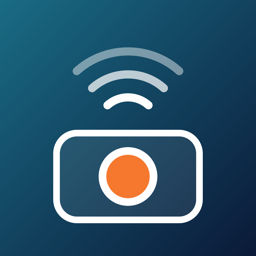

Deine ESP32-Station zu Hause · English below
ButtonControl richtet eine ESP32-Station ein und stellt sie ein: WLAN per Bluetooth, Abfuhrkalender für die nächste Mülltonne, Ort für das Wetter, Kopplung mit Apple Home oder Google Home über Matter. Alles läuft im Heimnetz, ohne Konto und ohne Cloud.
Die App findet meine Station nicht. Ist das iPhone im selben WLAN? Ist „Lokales Netzwerk“ für ButtonControl erlaubt (Einstellungen → Datenschutz & Sicherheit → Lokales Netzwerk)? Sonst die Adresse der Station von Hand eintragen.
Die Einrichtung per Bluetooth scheitert. Die Station muss im Einrichtungsmodus sein (QR-Code auf dem Display). Der Code (PoP) muss genau stimmen.
Wo finde ich den Abfuhrkalender? Auf der Seite deines Entsorgers unter „Abfuhrkalender“ → „Kalender abonnieren“ (iCal/ICS-Link).
Fragen, Fehler, Ideen: info@skyvane.app — oder in der App unter Einstellungen → Feedback senden.
ButtonControl sets up and configures an ESP32 station: Wi-Fi over Bluetooth, a bin collection calendar for the next bin, a place for the weather, pairing with Apple Home or Google Home via Matter. Everything stays on your home network — no account, no cloud. Contact: info@skyvane.app.
© AK
SkyVane · Apps für Himmel und Unterwegs · info@skyvane.app